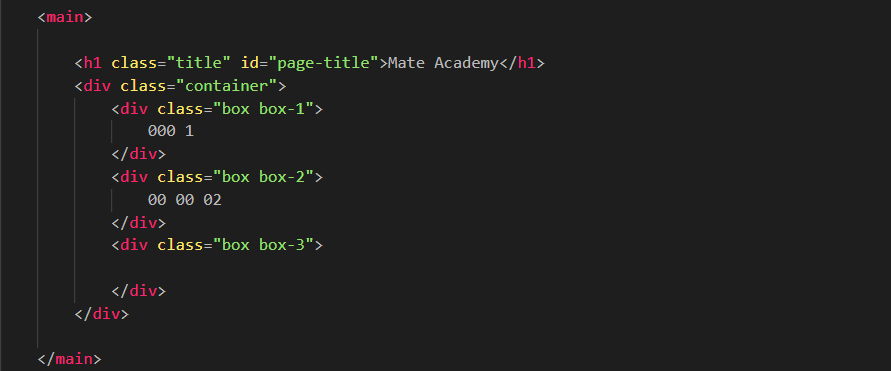
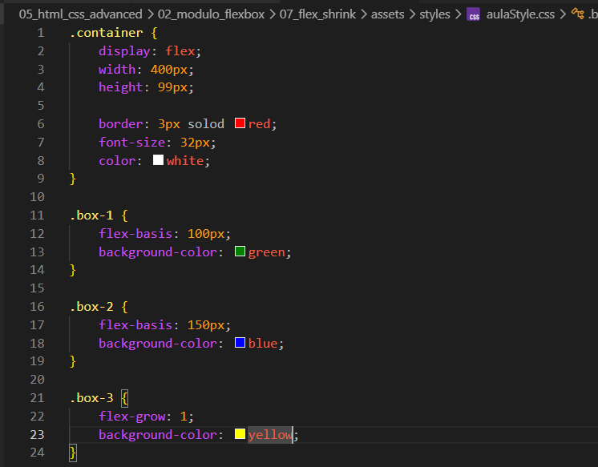
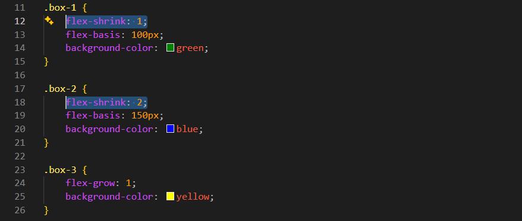

Flex-shrink
Intro
Aqui iremos ver oque acontece com os elementos flex quando nao ha espaco suficiente no container.
Aqui iremos ver oque acontece com os elementos flex quando nao ha espaco suficiente no container.
HTML:

CSS:

Em nosso codigo de exemplo, podemos observar que cada um tem seu tamanho, porem se comecar a diminuir o tamanho do elemento pai, podemos observar que nosso ultimo elemento (box-3) ira ficando cada vez menor, ate sumir completamente.
Se continuarmos diminuindo, por padrao quando nao ha espaco suficiente no container os elementos comecam a encolher proporcionalmente ao seu tamanho base, no caso de nosso elemento 3 ele sumiu pois nao havia conteudo dentro.
Porem tambem podemos estar mudando a proporcao que diminui o elemento do seu tamanho base. Por exemplo, se quisermos que o segundo elemento encolha mais rapido que o primeiro, podemos definir um valor maior para a propriedade flex-shrink: 2;

Dessa forma nosso segundo elemento ira perder espaco livre mais rapidamente, mas a proporcao é mais complexa. Isso ocorre pois o tamanho base ainda e levado em consideracao. Se o flex-shring: 0; ele nao sera reduzido.
Conteudo da aula